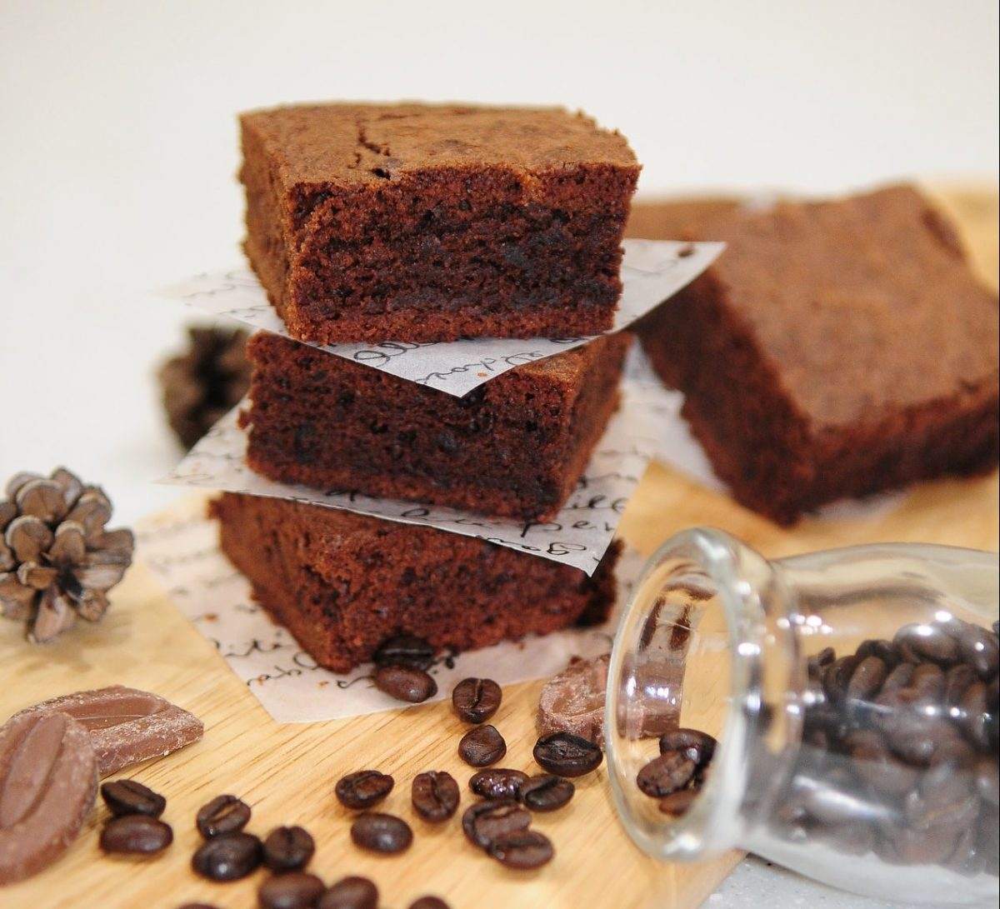

Brownies with coffee

Let's start !
This recipe is the classic brownies recipe
but with a touch of coffee, which increases the flavor
of chocolate, enjoy it
For the ingredients you will need:
- 200 grams (g) of black Chocolate
- 125g of butter
- 150g of sugar
- 3 eggs
- 120g of flour
- 1 spoon of soluble coffee
- 40g of nuts of your preference (can be walnuts or hazelnuts)
Preparation
- Preheat the oven to 180°C
- Chop the chocolate and melt it together
with the butter in the microwave at medium
power for 2 or 3 minutes.
- Now add the sugar, the eggs (one by one) and mix well
after incorporating each one of them. Then add the coffee,
flour and nuts and chopped hazelnuts. We mix well.
- Pour the mixture into a silicone mold, smoothing the surface with a spatula,
and put it in the oven for 20 minutes.
- Retiramos, dejamos que se temple y lo desmoldamos
Home